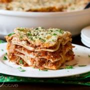

Lasagna Recipe

Description
Need a fun recipe for your family? Then look no further than this easy and delicious lasagna recipe
Ingredients:
- 9 lasagna noodles (uncooked or cooked, depending on the type)
- 1 pound ground beef or Italian sausage
- 2 cups ricotta cheese
- 2 cups shredded mozzarella cheese
- 1 cup grated Parmesan cheese
- 1 jar (about 24 ounces) marinara sauce or spaghetti sauce
- 1 egg (optional, for mixing with ricotta)
- 1 teaspoon dried oregano
- 1 teaspoon dried basil
- Salt and pepper to taste
Steps:
- Preheat the oven to 375°F (190°C).
Preparing the meat:
- Toss until the pasta is evenly coated with the sauce.
- Add the marinara sauce to the meat and stir to combine. Let it simmer for a few minutes.
Prepping the Ricotta mixture:
- In a mixing bowl, combine the ricotta cheese, egg (if using), dried oregano, dried basil, salt, and pepper. Mix until well combined.
Layering the Lasagna:
- In a 9x13 inch baking dish, spread a thin layer of the meat sauce on the bottom.
- Place 3 lasagna noodles on top of the sauce.
- Spread half of the ricotta mixture over the noodles.
- Sprinkle with 1/3 of the mozzarella cheese.
- Add another layer of meat sauce over the cheese.
- Repeat the layers: noodles, ricotta mixture, mozzarella cheese, and meat sauce.
- For the final layer, place the last 3 noodles on top, cover with the remaining meat sauce,
and sprinkle with the remaining mozzarella and Parmesan cheese.
Baking the Lasagna:
- Cover the baking dish with aluminum foil (to prevent sticking, you can spray the foil with cooking spray).
- Cover the baking dish with aluminum foil (to prevent sticking, you can spray the foil with cooking spray).
- Remove the foil and bake for an additional 15-20 minutes, or until the cheese is bubbly and golden.
Let the Lasagna rest:
- Once done, remove the lasagna from the oven and let it rest for about 10-15 minutes before slicing. This helps the layers set.
Cut into your preferred sizes and serve hot. Enjoy!